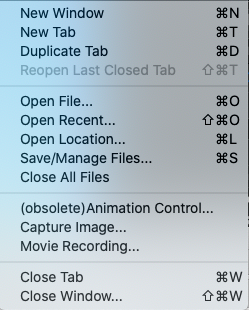

File Menu
The File Menu appears slightly differently in
the Mac version and PC/Linux versions due to Mac-exclusive wb_view Menu
(contains About wb_view..., Preferences, and Quit
wb_view options). On PC/Linux the File Menu contains:
- About wb_view... (on Mac's wb_view Menu) to view WB
version, compiling, OpenGL and operating system information.
- Preferences
(on Mac's wb_view Menu) to set user specific Workbench configurations.
- New Window to open a new Workbench
Window (containing Menus, Tabs,
Toolbar and Toolbox). The
shortcut for New Window is Command/Ctrl + N.
- New Tab to open a new Viewing
Tab within the
active Workbench Window. The
shortcut for New Tab is Command/Ctrl
+ T.
- Duplicate Tab to open a new
Viewing Tab that duplicates the settings for the Active
Tab. The
shortcut for Duplicate Tab is Command/Ctrl + D.
- Open File... to open any file in
a Workbench readable format. The
shortcut for Open File is Command/Ctrl
+ O.
- Open Location... to open
Workbench-readable files that are located remotely via a URL
that the user sets (custom) or standard files through
connection to ConnectomeDB (with login). The shortcut for Open Location is Command/Ctrl + L.
- Open Recent Spec File... to open
a previously opened specification file from a dropdown list.
- Open Recent Scene File... to open
a previously opened scene file from a dropdown list.
- Save/Manage
Files... to save and/or manage options for
all loaded files within one dialog. The shortcut for Save/Manage Files is Command/Ctrl + S.
- Close All Files to close all
currently loaded files, without closing Workbench.
- Capture
Image... controls for capturing and saving
images from the Workbench window.
- Close Tab to close the currently Active
Tab in the active Workbench Window. The shortcut for Close Tab is Command/Ctrl + W.
- Close Window to close the
currently active Workbench Window. The shortcut for Close Window is Shift + Command/Ctrl + W.
- Exit (on Mac's wb_view Menu) to close the program.
The shortcut for Exit is Command/Ctrl + Q.
